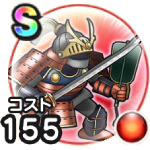

さまよう武者よろい
思い出の冒険旅行～みんな笑顔ではいポーズ～こころ最大コスト+4スキルの斬撃・体技ダメージ+3%イオ属性斬撃・体技ダメージ+7%転び耐性+10%踊り耐性+10% / 7.0点
くわしい特徴
【ランク特殊効果】 こころ最大コスト+4スキルの斬撃・体技ダメージ+3%イオ属性斬撃・体技ダメージ+7%転び耐性+10%踊り耐性+10%

思い出の冒険旅行～みんな笑顔ではいポーズ～こころ最大コスト+4スキルの斬撃・体技ダメージ+3%イオ属性斬撃・体技ダメージ+7%転び耐性+10%踊り耐性+10% / 7.0点
【ランク特殊効果】 こころ最大コスト+4スキルの斬撃・体技ダメージ+3%イオ属性斬撃・体技ダメージ+7%転び耐性+10%踊り耐性+10%